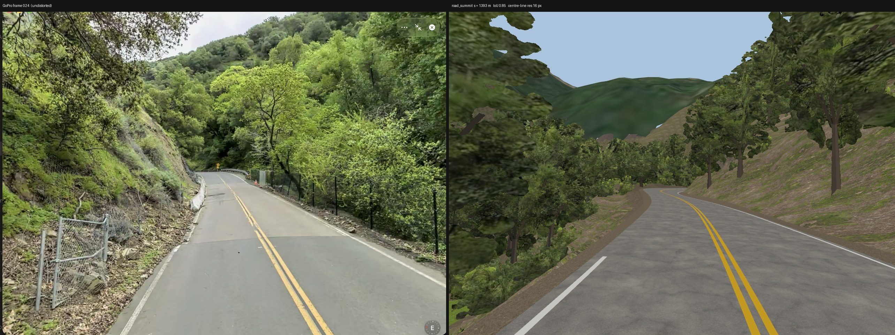
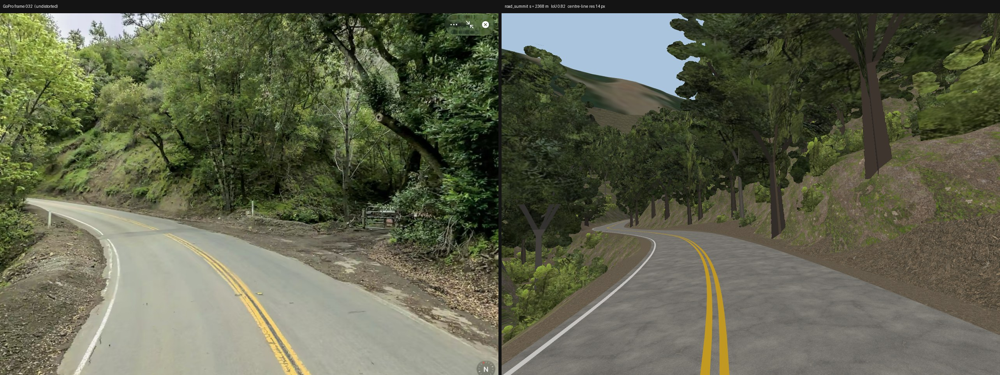
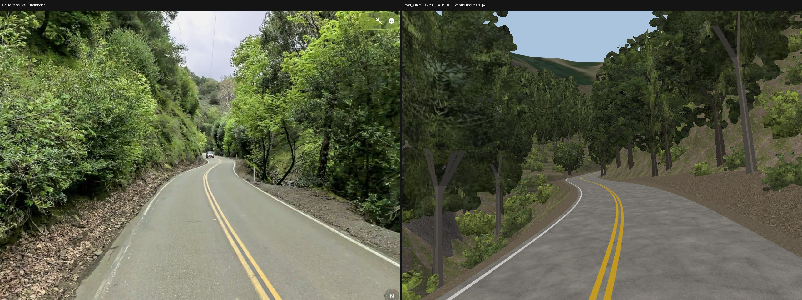
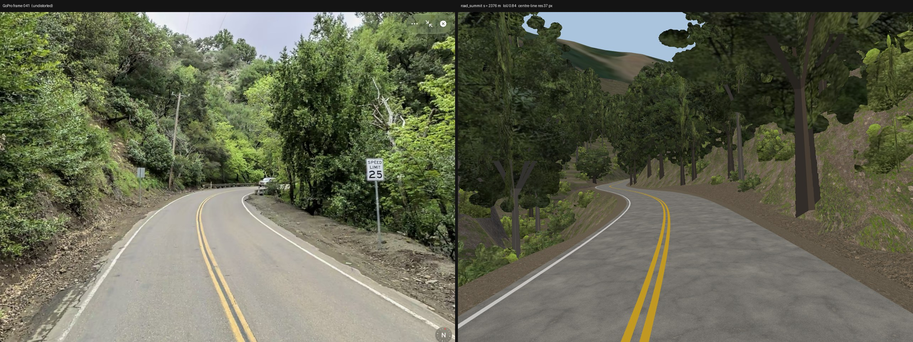
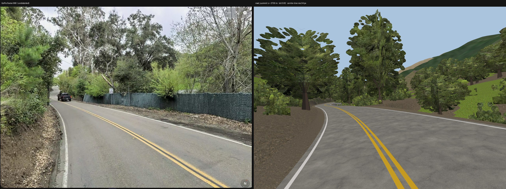
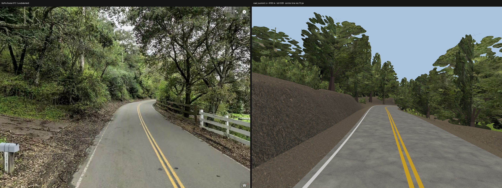
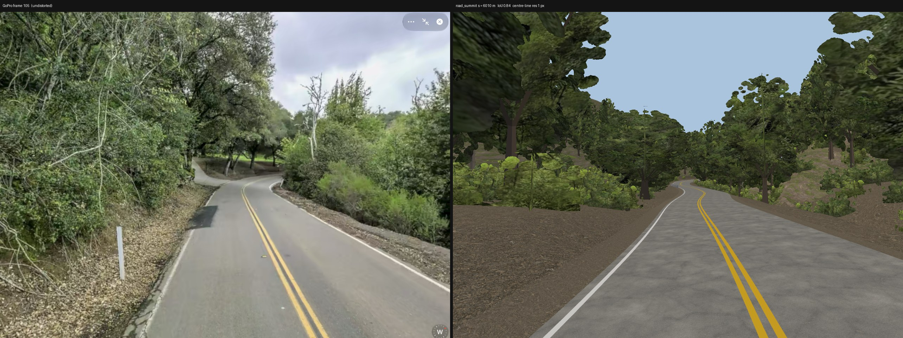
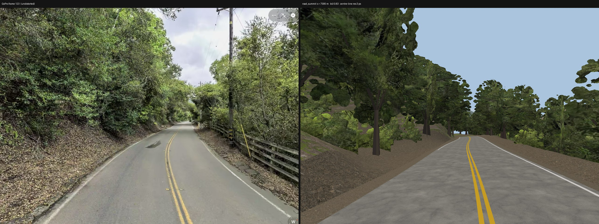

Left: GoPro frame undistorted to a pinhole view; right: render from the fitted pose in the same camera
(vertical FOV 64.0°). Lens fitted once: f/h = 0.8, fisheye factor λ = 1.0
(photo field 64.0° × 81.3°). Poses fitted to the road ribbon + yellow centre line (seed 7).
Rejected draws (poor fit): 128 (IoU 0.81, 29 px), 69 (IoU 0.76, 2 px), 79 (IoU 0.82, 62 px), 53 (IoU 0.83, 45 px), 90 (IoU 0.85, 51 px), 111 (IoU 0.80, 23 px), 83 (IoU 0.85, 41 px), 6 (IoU 0.74, 3 px).

Frame 024 · s = 1393 m (anchor estimate 1523 m) · lateral -0.80 m · eye 1.63 m · yaw +6.2° pitch +5.5° roll +2.1° · fit IoU 0.854, centre-line residual 16 px

Frame 032 · s = 2368 m (anchor estimate 2052 m) · lateral +0.22 m · eye 1.63 m · yaw -3.7° pitch +5.7° roll -4.0° · fit IoU 0.819, centre-line residual 14 px

Frame 039 · s = 2386 m (anchor estimate 2516 m) · lateral +0.68 m · eye 1.70 m · yaw +10.0° pitch +5.7° roll -3.6° · fit IoU 0.809, centre-line residual 36 px

Frame 041 · s = 2376 m (anchor estimate 2648 m) · lateral +0.67 m · eye 1.70 m · yaw +2.8° pitch +1.9° roll -2.7° · fit IoU 0.839, centre-line residual 37 px

Frame 068 · s = 3700 m (anchor estimate 3842 m) · lateral -0.77 m · eye 1.47 m · yaw -9.4° pitch +1.7° roll -4.0° · fit IoU 0.816, centre-line residual 34 px

Frame 072 · s = 4160 m (anchor estimate 3937 m) · lateral -0.76 m · eye 1.70 m · yaw +3.8° pitch +2.5° roll +4.0° · fit IoU 0.891, centre-line residual 13 px

Frame 105 · s = 6010 m (anchor estimate 5852 m) · lateral -0.80 m · eye 1.70 m · yaw +5.2° pitch +2.8° roll -0.9° · fit IoU 0.837, centre-line residual 1 px

Frame 123 · s = 7580 m (anchor estimate 7735 m) · lateral -0.33 m · eye 1.70 m · yaw +8.3° pitch -0.8° roll +0.7° · fit IoU 0.827, centre-line residual 3 px